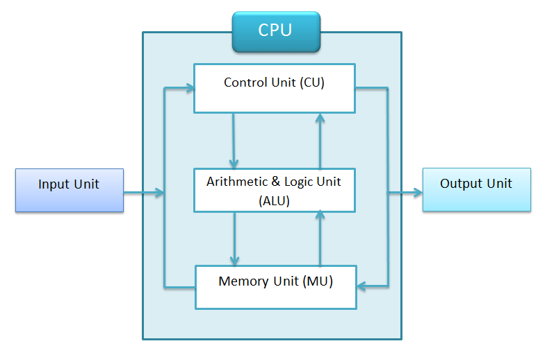
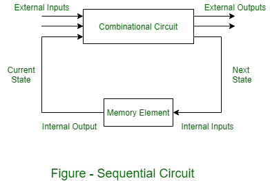
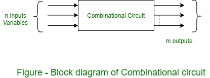

Arithmetic and Logical Unit (ALU)
The Arithmetic and Logical Unit (ALU) is a digital circuit used to perform arithmetic and logical operations. It is a fundamental building block of the central processing unit (CPU) of a computer. The ALU is responsible for performing calculations and logical operations on data received from memory or other components of the computer.
What is an ALU?
The ALU is a digital circuit that performs arithmetic and bitwise logical operations on binary numbers. It is a combinational digital logic circuit that receives input data from the computer's registers, performs operations on that data, and then stores the result back in the registers or memory. The ALU is capable of performing various arithmetic operations, such as addition, subtraction, multiplication, and division, as well as logical operations like AND, OR, NOT, and XOR.
The ALU is designed to perform operations on binary data, which is represented as a string of 1s and 0s. The operations are performed using logic gates and other digital components, which implement the necessary logic functions to manipulate the binary data.

Functions of the ALU
The main functions of the ALU include:
- Arithmetic Operations: The ALU performs basic arithmetic operations such as addition, subtraction, multiplication, and division on binary data.
- Logical Operations: The ALU performs logical operations such as AND, OR, NOT, and XOR, which are used to manipulate individual bits or groups of bits in binary data.
- Shift Operations: The ALU can perform shift operations, which move the bits in a binary number to the left or right by a specified number of positions.
- Comparison Operations: The ALU can compare two binary numbers and determine their relationship (e.g., equal to, less than, or greater than).
- Data Transfer: The ALU facilitates the movement of data between registers, memory, and other components of the computer system.
Components of the ALU
The main components of an ALU include:
- Arithmetic Circuit: This component performs arithmetic operations like addition, subtraction, multiplication, and division.
- Logic Circuit: This component performs logical operations like AND, OR, NOT, and XOR.
- Shift Circuitry: This component handles shift operations, moving bits to the left or right within a binary number.
- Comparator: This component compares two binary numbers and determines their relationship (e.g., equal to, less than, or greater than).
- Control Unit: This component controls the operation of the ALU by generating control signals based on the instruction being executed.
- Registers: These are temporary storage areas within the ALU that hold data and intermediate results during computations.
Types of ALU
There are two main types of ALUs:
- Combinational ALU: A combinational ALU performs operations directly on the input data and generates an output based solely on the current inputs. It does not have any internal memory or state.

- Sequential ALU: A sequential ALU has internal memory or state that can store intermediate results or control information. This allows the ALU to perform more complex operations that may require multiple steps or depend on previous states.

Importance of the ALU
The ALU is a critical component of the CPU and plays a vital role in the overall performance of a computer system. Its ability to perform arithmetic and logical operations quickly and efficiently is essential for executing instructions and processing data. The ALU's design and implementation have a direct impact on factors such as processing speed, power consumption, and overall system performance.
As computer systems continue to evolve and become more complex, the design and optimization of ALUs remain a key area of research and development in the field of computer architecture and digital logic design.